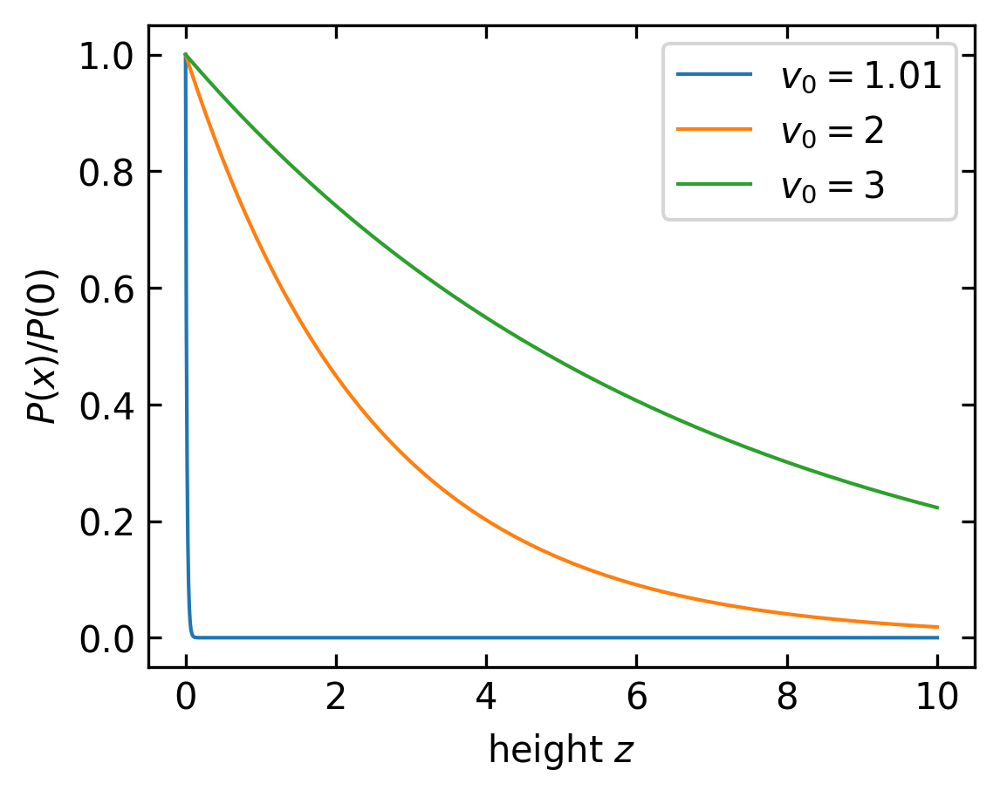
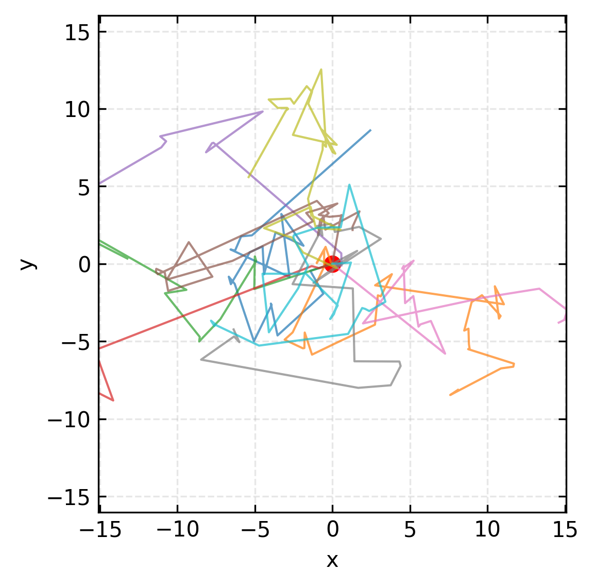
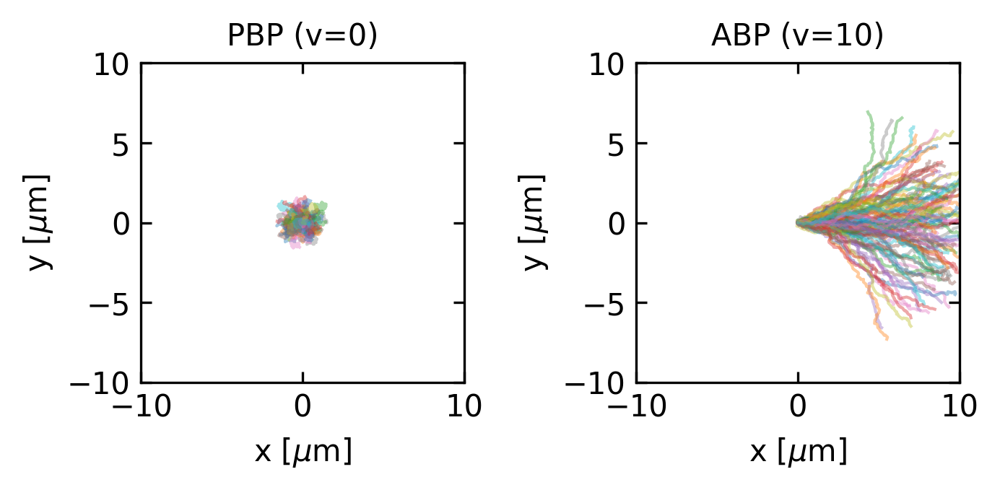
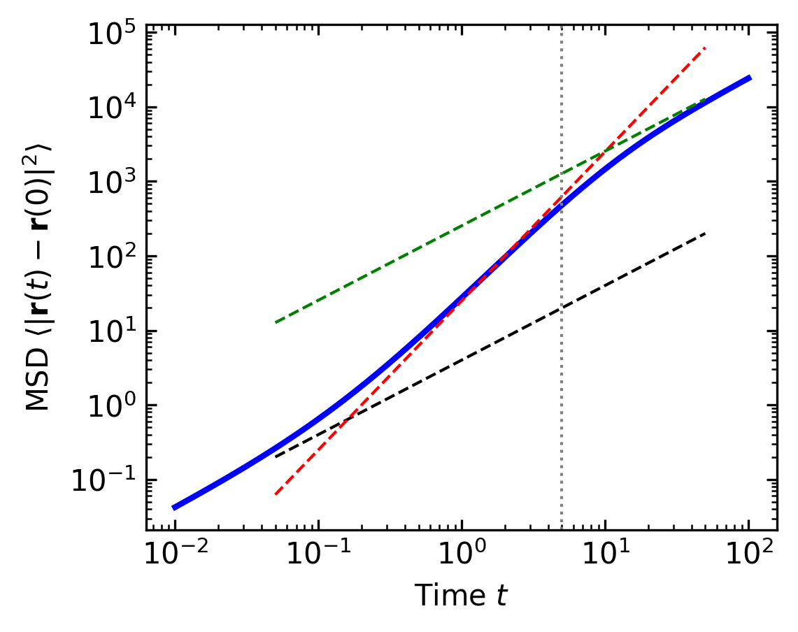
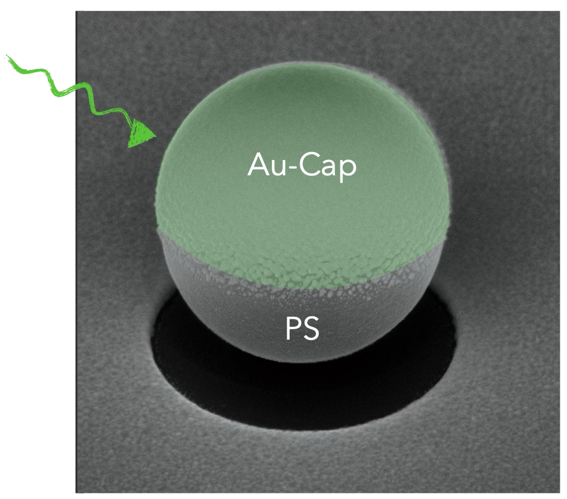
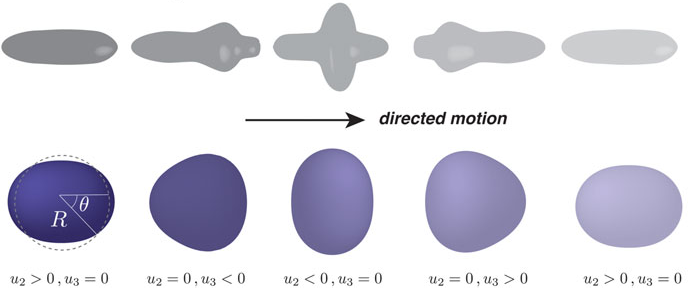
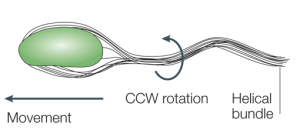
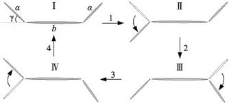
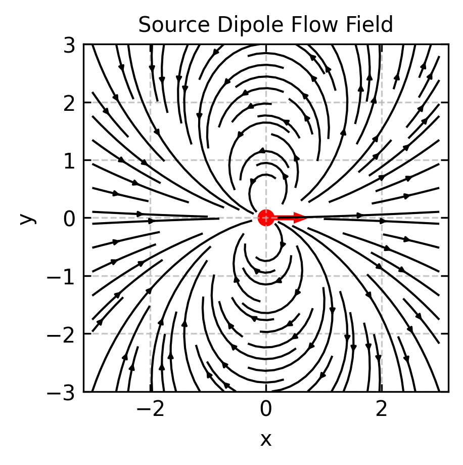
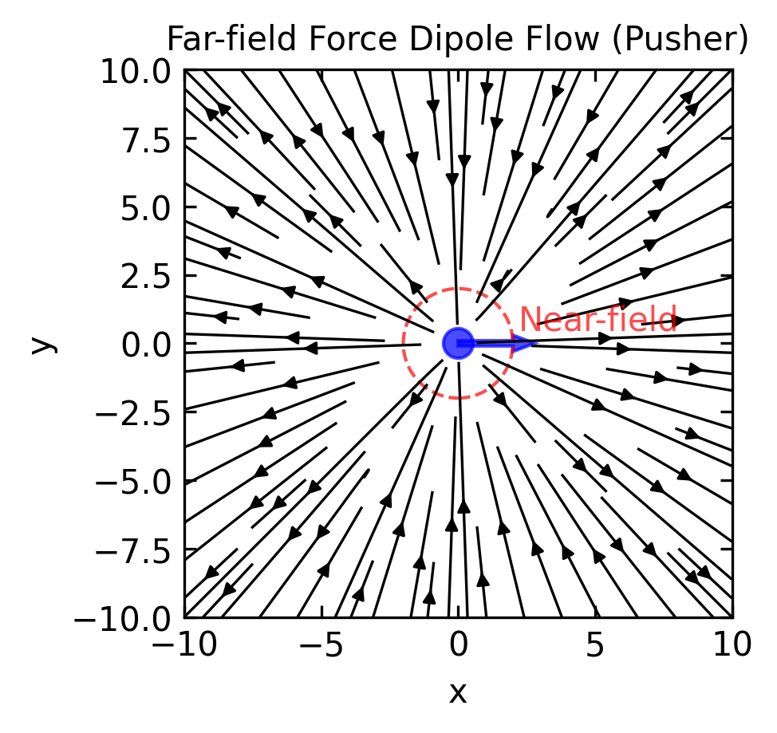

Introduction: From Equilibrium Violations to Microscopic Models
In the previous lecture, we explored the fundamental concepts of equilibrium statistical mechanics and how active biological systems violate these principles. We examined detailed balance and the fluctuation-dissipation theorem (FDT), discovering that active systems consistently break these equilibrium constraints.
One of the key examples we studied was sedimentation, where colloidal particles in thermal equilibrium form an exponential density profile according to the Boltzmann distribution:
\[n(h) = n_0 e^{-\frac{mgh}{k_B T}}\]
This distribution arises directly from equilibrium statistical mechanics and represents a balance between gravitational forces and thermal fluctuations.
But what happens when particles are active - consuming energy to propel themselves? This lecture begins by exploring one of the simplest active matter models: the run-and-tumble particle (RTP). We’ll first examine this model in 1D with sedimentation to directly contrast with our equilibrium example from lecture 2, demonstrating how active particles violate equilibrium principles even in this simplified scenario.
From there, we’ll extend to more sophisticated microscopic models that can capture the essential features of self-propelled particles in three dimensions:
Run-and-Tumble Particles (RTPs) - inspired by bacterial motion patterns like E. coli
Active Brownian Particles (ABPs) - which combine random diffusion with persistent self-propulsion
Swimming at Low Reynolds Number - examining the physics that governs locomotion at the microscale
Hydrodynamic Interactions - understanding how active particles influence their surroundings and each other
Microswimmer Force Dipoles - characterizing the flow fields generated by different types of swimmers
These models will provide us with the tools to analyze collective behaviors, pattern formation, and non-equilibrium dynamics in active biological systems.
Run-and-Tumble Particles (RTPs)
Run-and-tumble dynamics represent an important class of active motion, inspired by the swimming behavior of bacteria like E. coli. Unlike passive Brownian motion, run-and-tumble particles alternate between straight-line “runs” and random reorientation “tumbles.”
Figure 1— Run-and-reverse motion of Pseudomonas Taiwanensis bacteria (move by Desmond Quinn, MONA group).
This run-and-tumble motion, which comes in different flavors (e.g. a run-and revserse motion as displayed in the movie above) has even some functionality. It allows bacteria to move in gradients of chemical species concentrations without measuring even the gradient directly.
1D Run-and-Tumble with Sedimentation
We can make a simple model for this run-and-tumble motion in one dimension. Let’s start with the master equations for the probabilities \(P_+(x,t)\) and \(P_-(x,t)\) of finding a particle at position \(x\) moving in the positive or negative direction, respectively. In the simplest case without gravity or diffusion:
These equations describe how probabilities change due to advection at position-dependent speed \(v_0(x)\) and flipping of the swimming direction with rate \(\lambda\).
We can rewrite these equations in terms of the total probability density \(P(x,t) = P_+(x,t) + P_-(x,t)\) and the polarization \(\sigma(x,t) = P_+(x,t) - P_-(x,t)\). After adding and subtracting the equations:
From the first equation, we can identify the probability current as \(J(x,t) = v_0(x) \sigma(x,t)\). In the steady state, \(\frac{\partial \sigma}{\partial t} = 0\), which gives:
This has the form of a drift-diffusion current \(J = -D_{\text{eff}}\frac{\partial P}{\partial x} + V_{\text{eff}}P\) with a position-dependent effective diffusion coefficient \(D_{\text{eff}}(x) = \frac{v_0^2(x)}{2\lambda}\) and an effective drift velocity \(V_{\text{eff}}(x) = -\frac{v_0(x)}{2\lambda}\frac{dv_0(x)}{dx}\).
Density Distributions in Different Regimes
One can find out now the steady state distribution of run-and-tumble swimmers for different cases. Two interesting ones are:
Position-dependent tumble rate, constant speed: When the speed \(v_0\) is constant but the tumble rate \(\lambda(x)\) varies with position, the steady-state current is:
Interestingly, spatial variation in tumble rate alone (\(\lambda(x)\)) cannot create population gradients when the swimming speed is constant. However, in bacterial chemotaxis, the tumble rate depends not just on position but also on the bacterium’s orientation relative to the chemical gradient: \(\lambda(\mathbf{r}, \mathbf{n}) = \lambda_0(1 - \mathbf{n} \cdot \nabla c(\mathbf{r})/|\nabla c(\mathbf{r})|)\). This directional dependence allows bacteria to effectively navigate chemical landscapes, creating population gradients despite constant swimming speed. (see for example 1)
Chemotaxis
Chemotaxis is the directed movement of organisms in response to chemical gradients in their environment. This behavior allows cells to move toward favorable chemical conditions (positive chemotaxis) or away from harmful ones (negative chemotaxis). In bacteria like E. coli, chemotaxis works through a biased random walk: rather than directly sensing gradient directions, bacteria adjust their tumbling frequency based on whether they’re moving toward or away from attractive chemicals. This elegant mechanism enables even simple single-celled organisms to effectively navigate complex chemical landscapes without sophisticated sensory apparatus.
Position-dependent speed, constant tumble rate: When the swimming speed depends on position \(v_0(x)\) while the tumble rate \(\lambda\) remains constant, we can find the steady-state density distribution by setting \(J(x) = 0\) (no flux condition) and solving:
The solution gives the steady-state density distribution:
\[P(x) \propto \frac{1}{v_0(x)}\]
This reveals that bacteria naturally accumulate in regions of lower swimming speed. Looking at the effective drift velocity \(V_{\text{eff}}(x) = -\frac{v_0(x)}{2\lambda}\frac{dv_0(x)}{dx} = -\frac{1}{4\lambda}\frac{d(v_0^2(x))}{dx}\), we see bacteria will move toward regions where swimming speed decreases. This provides a mechanism for chemotaxis without directly modulating the tumbling rate. In fact this overwrites the detailed balance equation we obtained earlier for equilibrium.
Sedimentation of Run-and-tumeble particles
With a little bit of effort, one can modify this simple model to include an additional sedimentation drift velocity which is given by \(mg/\gamma\), where \(\gamma\) is the friction coefficient. Including further thermal diffusion yields:
This is strikingly different from the equilibrium result! When sedimentation speed and active particle speed are comparable the sedimentation length is zero. The bacteria would completely collapse to a layer on the surface.
If the speed is now bigger than the sedimentation speed, the sedimentation length becomes positive.
which is not the temperature of the surrounding medium. This effective temperature accounts for the active motion of the particle and its interaction with the surrounding medium.
Code
# Parametersx = np.linspace(0, 10, 1000) # height above surfacev_sed =1# sedimentation velocity mg/γlambda_tumble =0.6# tumble rate# Three different active velocitiesv0_values = [1.01, 2, 3] # self-propulsion speeds# Calculate density profilesplt.figure(figsize=get_size(10, 8))for v0 in v0_values:# Calculate sedimentation length delta = (v0**2- v_sed**2) / (2* lambda_tumble * v_sed) density = np.exp(-x / delta) density = density / density[0] plt.plot(x, density, '-', linewidth=1, label=f'$v_0 = {v0}$')plt.xlabel('height $z$')plt.ylabel('$P(x)/P(0)$')plt.legend()plt.tight_layout()plt.show()

Figure 2— Sedimentation profiles for three different activity levels. As the speed \(v_0\) increases relative to the sedimentation velocity \(mg/γ=1\), the density profile extends further from the bottom surface.
Mathematical Formulation in Higher Dimensions
Extending to higher dimensions, the equations of motion for a run-and-tumble particle can be written as:
where \(\mathbf{n}(t)\) represents the orientation vector that changes discontinuously according to a Poisson process. This stochastic process models tumbling events as memory-less, random occurrences with the fundamental property:
where \(\lambda\) is the tumbling rate and \(o(dt)\) represents higher-order terms that become negligible for small \(dt\). This formulation has several important implications:
The probability of a tumble occurring in any small time interval \(dt\) is proportional to the length of that interval, with \(\lambda\) being the proportionality constant.
Tumbling events are statistically independent - the probability of a tumble occurring is unaffected by when the previous tumble occurred, giving the process its “memory-less” property.
The waiting times between consecutive tumbles follow an exponential distribution with mean \(1/\lambda\): \[P(\text{time between tumbles} > \tau) = e^{-\lambda\tau}\]
The number of tumbles \(N(t)\) occurring within a time interval \([0, t]\) follows a Poisson distribution: \[P(N(t) = k) = \frac{(\lambda t)^k e^{-\lambda t}}{k!}\]
A critical aspect of the run-and-tumble model is how the new orientation is determined after each tumbling event. In the standard model, the new orientation vector \(\mathbf{n}(t^+)\) immediately after a tumble at time \(t\) is chosen from a uniform probability distribution on the unit circle (in 2D) or sphere (in 3D), completely independent of the previous orientation \(\mathbf{n}(t^-)\). This means:
In 2D: The new angle \(\theta_{new}\) is drawn uniformly from \([0, 2\pi)\)
In 3D: The new direction is uniformly distributed on the unit sphere, typically generated by choosing \(\phi\) uniformly from \([0, 2\pi)\) and \(\cos\theta\) uniformly from \([-1, 1]\)
This uniform reorientation distribution is a key feature that distinguishes run-and-tumble motion from other active particle models. For some biological swimmers, variations of this distribution may be more appropriate - for example, some bacteria exhibit a “persistence” in their tumbling, where the new direction maintains some correlation with the previous direction. Other organisms might show “run-and-reverse” behavior, where the new orientation is preferentially opposite to the previous one. These variations can be modeled by modifying the reorientation distribution accordingly.
Code
# Parameters for run-and-tumble motionv0 =1.0# speed (constant)lambda_tumble =0.4# tumble ratetotal_time =50# total simulation timedt =0.1# time step# Function to generate a single run-and-tumble trajectorydef simulate_run_tumble_2d(v0, lambda_tumble, total_time, dt, seed=None):if seed isnotNone: np.random.seed(seed)# Number of time steps n_steps =int(total_time / dt)# Initialize arrays for position and orientation x = np.zeros(n_steps) y = np.zeros(n_steps) theta = np.zeros(n_steps)# Set random initial orientation theta[0] =2* np.pi * np.random.random()# Simulate run-and-tumble motionfor i inrange(1, n_steps):# Check if tumble occurs (Poisson process)if np.random.random() < lambda_tumble * dt:# New random orientation theta[i] =2* np.pi * np.random.random()else:# Keep same orientation theta[i] = theta[i-1]# Update position x[i] = x[i-1] + v0 * np.cos(theta[i]) * dt y[i] = y[i-1] + v0 * np.sin(theta[i]) * dtreturn x, y# Create figureplt.figure(figsize=get_size(10, 10))# Generate and plot 10 trajectoriesfor i inrange(10): x, y = simulate_run_tumble_2d(v0, lambda_tumble, total_time, dt, seed=i) plt.plot(x, y, '-', linewidth=1, alpha=0.7)# Add marker for starting pointplt.scatter(0, 0, color='red', s=50)plt.xlabel('x')plt.ylabel('y')plt.axis('equal')plt.grid(True, linestyle='--', alpha=0.3)plt.xlim(-15, 15)plt.ylim(-15, 15)plt.tight_layout()plt.show()

Figure 3— Ten trajectories of run-and-tumble particles in 2D, each starting from the origin. The particles move with constant speed v₀ = 1 and randomly change direction according to a Poisson process with rate λ = 0.1.
Connection to ABPs
Interestingly, in the limit of long observation times, the large-scale dynamics of RTPs become equivalent to those of ABPs. The effective rotational diffusion coefficient for RTPs is:
\[D_r^{\text{eff}} = \frac{\lambda}{d-1}\]
where \(d\) is the dimensionality. This equivalence suggests that these seemingly different microscopic mechanisms can lead to similar macroscopic behaviors.
Non-equilibrium Aspects
RTP models demonstrate several non-equilibrium features beyond the effective temperature we observed in sedimentation:
The steady-state cannot be written as a Boltzmann distribution
Probability currents exist even in steady state
The fluctuation-dissipation theorem is violated
These features arise from the persistent energy consumption required to maintain the run-and-tumble motion.
Active Brownian Particles (ABPs)
After examining Run-and-Tumble Particles, we now turn to Active Brownian Particles (ABPs), which represent another fundamental model of self-propelled agents. Like RTPs, ABPs extend the equilibrium Brownian motion framework we discussed in Lecture 2, but they do so through continuous rotational diffusion rather than discrete tumbling events. This alternative self-propulsion mechanism similarly drives the system out of equilibrium.
Figure 4— Janus particles performing active Brownian motion. These synthetic microswimmers have two distinct faces with different chemical or physical properties, causing them to self-propel through an asymmetric interaction with their environment while undergoing rotational diffusion. The movie contains not only ABP motion but some additional driving force. (Movie by Lisa Rohde, MONA group.)
Mathematical Formulation
To understand Active Brownian Particles, we should start from the general underdamped Langevin equation for Brownian motion:
Here, \(\mathbf{r}=(x,y)\) is the particle position, \(m\) is the particle mass, and the left side represents inertial forces. On the right side we have a dissipative friction term with coefficient \(\gamma\) that removes energy from the system, a conservative force from the potential \(U(\mathbf{r})\), and a thermal noise term \(\boldsymbol{\xi}(t)\) that injects energy into the particle motion. The thermal translational noise \(\boldsymbol{\xi}(t)\) has zero mean (\(\langle\boldsymbol{\xi}(t)\rangle = 0\)) and correlations \(\langle\xi_i(t)\xi_j(t')\rangle = 2\gamma k_B T \delta_{ij}\delta(t-t')\), following the fluctuation-dissipation theorem.
The energy dissipation rate due to friction is given by \(P_{diss} = \gamma|\mathbf{v}|^2\), where \(\mathbf{v}=\frac{d\mathbf{r}}{dt}\) is the particle velocity. In equilibrium, the average energy dissipation rate per degree of freedom is \(\langle P_{diss} \rangle = \frac{2\gamma k_B T}{m}\). Meanwhile, the energy injection rate from thermal fluctuations can be calculated from the work done by the random force: \(P_{inj} = \boldsymbol{\xi}(t) \cdot \mathbf{v}\).
To determine the average injected power, we need to evaluate \(\langle \boldsymbol{\xi}(t) \cdot \mathbf{v} \rangle\). This requires examining the correlation between the noise and velocity, which isn’t immediately obvious since both are stochastic quantities. We can solve this by considering the Langevin equation in the stationary state. From the equipartition theorem, we know that \(\langle mv^2 \rangle = k_B T\) per degree of freedom, which means \(\langle v^2 \rangle = \frac{k_B T}{m}\).
The instantaneous velocity can be formally expressed using the Green’s function solution of the Langevin equation:
where \(\tau_p = m/\gamma\) is the momentum relaxation time. Using this expression and the noise correlation function \(\langle \xi_i(t) \xi_j(t') \rangle = 2\gamma k_B T \delta_{ij}\delta(t-t')\), we can calculate:
Thus, the average energy injection rate per degree of freedom is \(\langle P_{inj} \rangle = \frac{2\gamma k_B T}{m}\). The equality between injection and dissipation rates ensures detailed balance in equilibrium systems, maintaining a consistent average kinetic energy of \(\frac{k_B T}{2}\) per degree of freedom in accordance with the equipartition theorem.
For microscopic particles in a viscous medium, the inertial term becomes negligible (mass effects disappear on timescales \(t \gg m/\gamma\)), leading to the overdamped limit.
In an ABP, we add a non-equilibrium self-propulsion force, resulting in these overdamped Langevin equations:
The first equation describes the particle’s translational motion, where \(v_0\) is the self-propulsion speed and \(\mathbf{n}(t) = (\cos\theta(t), \sin\theta(t))\) is a unit vector pointing in the direction of self-propulsion.
The second equation governs the particle’s orientation \(\theta\), which evolves through rotational diffusion. The rotational noise \(\eta(t)\) has zero mean (\(\langle\eta(t)\rangle = 0\)) and correlations \(\langle\eta(t)\eta(t')\rangle = 2D_r\delta(t-t')\), where \(D_r\) is the rotational diffusion coefficient.
Unlike passive Brownian motion discussed in Lecture 2, ABPs fundamentally violate detailed balance due to the persistent self-propulsion term, which acts as an additional energy source driving the system out of equilibrium. The particle moves with a characteristic persistence time \(\tau_r = 1/D_r\) before its direction is randomized by rotational diffusion.
Mean Displacement
If we consider an active Brownian particle in two dimension starting at the origin (x=0, y=0) with an initial orientation θ=0 (pointing along the positive x-axis), the mean displacement shows interesting directional behavior:
The mean displacement in the y-direction averages to zero due to the symmetry of rotational diffusion. The x-component shows an initial ballistic growth that saturates at the persistence length scale \(l_p=v_0/D_r\) for times much larger than the rotational diffusion time \(\tau_r=1/D_r\). This persistence length represents the typical distance traveled before the particle’s direction is randomized.
Unlike equilibrium Brownian motion where the mean displacement is zero in all directions, the ABP’s mean displacement reflects the persistence of its self-propulsion. As \(t \to \infty\), the orientation becomes fully randomized, and any further displacement averages to zero, resulting in the saturation of the mean displacement to a finite value.

Figure 5— Trajectories of a particle (R=1 µm) starting at the origin with an initial orientation \(\theta=0\). Left: passive Brownian particle (\(v=0\) µm/s). Right: Active Brownian Particle (\(v=10\) µm/s). (\(\tau_r=6 s\).)
Mean Square Displacement
The mean square displacement (MSD) of an ABP reveals a rich multi-regime behavior that can be analyzed from the full expression:
\[\langle|\mathbf{r}(t) - \mathbf{r}(0)|^2\rangle = 4D_t t + \frac{2v_0^2}{D_r^2}(D_r t - 1 + e^{-D_r t})\]
where \(D_t = k_BT/\gamma\) is the thermal translational diffusion coefficient.
We can identify three distinct regimes by examining the limiting behavior at different timescales:
Very short times (\(t \ll\tau_r\), where \(\tau_r = 1/D_r\) is the rotational diffusion time):
By expanding the exponential term \(e^{-D_r t} \approx 1 - D_r t + \frac{(D_r t)^2}{2} - ...\), we obtain:
This reveals a combination of diffusive behavior (\(\sim t\)) from thermal fluctuations and the beginning of ballistic motion (\(\sim t^2\)) from persistent self-propulsion.
Intermediate times (\(\tau_t \ll t \ll \tau_r\)):
The ballistic term dominates and the MSD scales approximately as:
This quadratic scaling reflects the persistent directed motion before rotational diffusion randomizes the swimming direction.
Long times (\(t \gg \tau_r\)):
When \(t \gg 1/D_r\), \(e^{-D_r t} \approx 0\), and the MSD becomes:
\[\langle|\mathbf{r}(t) - \mathbf{r}(0)|^2\rangle \approx 4D_t t + \frac{2v_0^2}{D_r}t - \frac{2v_0^2}{D_r^2}\]
For sufficiently long times, the constant term becomes negligible, resulting in diffusive motion with an enhanced effective diffusion coefficient:
\[D_{\text{eff}} = D_t + \frac{v_0^2}{2dD_r}\]
where \(d\) is the dimensionality. This enhanced diffusion coefficient represents a key signature of the system’s non-equilibrium nature and cannot be explained by equilibrium statistical mechanics.
Code
# ParametersD_t =1.0# thermal translational diffusion coefficientv_0 =5.0# self-propulsion speedD_r =0.2# rotational diffusion coefficienttau_r =1/D_r # rotational diffusion time# Calculate theoretical MSDdef msd_theory(t, D_t, v_0, D_r):"""Theoretical mean square displacement for active Brownian particles"""return4*D_t*t + (2*v_0**2)/(D_r**2)*(D_r*t -1+ np.exp(-D_r*t))# Time range spanning multiple regimest = np.logspace(-2, 2, 1000) # from 0.01 to 100msd = msd_theory(t, D_t, v_0, D_r)# Calculate effective diffusion coefficientD_eff = D_t + v_0**2/(2*D_r)# Create figureplt.figure(figsize=get_size(10, 8))# Plot MSD on log-log scaleplt.loglog(t, msd, 'b-', linewidth=2, label='MSD of ABP')# Add reference lines for different scaling regimest_ref = np.array([0.05, 50])plt.loglog(t_ref, 4*D_t*t_ref, 'k--', label=r'$\sim 4D_t t$(thermal diffusion)')plt.loglog(t_ref, v_0**2*t_ref**2, 'r--', label=r'$\sim v_0^2 t^2$(ballistic)')plt.loglog(t_ref, 4*D_eff*t_ref, 'g--', label=r'$\sim 4D_{eff}t$(enhanced diffusion)')# Add vertical line at rotational diffusion timeplt.axvline(x=tau_r, color='gray', linestyle=':', label=r'$\tau_r = 1/D_r$')# Mark the three regimes#plt.annotate("Short-time regime", xy=(0.02, 0.3), xytext=(0.02, 0.3), fontsize=9)#plt.annotate("Intermediate-time regime", xy=(0.5, 10), xytext=(0.5, 10), fontsize=9)#plt.annotate("Long-time regime", xy=(10, 200), xytext=(10, 200), fontsize=9)plt.xlabel(r'Time $t$')plt.ylabel(r'MSD $\langle|\mathbf{r}(t) - \mathbf{r}(0)|^2\rangle$')#plt.legend()plt.tight_layout()plt.show()

Figure 6— Mean square displacement (MSD) of an active Brownian particle showing three distinct regimes. At short times (\(t \ll \tau_r\)), a combination of diffusive and ballistic motion is observed. At intermediate times, ballistic motion dominates (\(\text{MSD} \sim t^2\)). At long times (\(t \gg \tau_r\)), enhanced diffusion emerges with an effective diffusion coefficient larger than the thermal value.
Probability Distribution
The steady-state probability distribution of ABPs cannot be written in the Boltzmann form, unlike equilibrium systems. Instead, it depends on both position and orientation, and generally has to be obtained numerically or through approximation methods.
In homogeneous space, the orientation-averaged probability distribution is uniform. However, in the presence of boundaries or spatially varying potentials, ABPs exhibit phenomena like accumulation at surfaces and trapping in local potential minima that are qualitatively different from equilibrium Brownian particles.
Time Reversal Symmetry Breaking
One of the hallmarks of equilibrium systems is their invariance under time reversal. For passive Brownian particles, if we were to watch a movie of particle motion and then play it backwards, the reversed trajectories would still be physically plausible and consistent with the laws of equilibrium statistical mechanics.
For ABPs, however, time reversal symmetry is explicitly broken. This can be seen directly from the overdamped Langevin equations:
\[\frac{d\theta}{dt} = \eta(t)\] Under time reversal \(t \rightarrow -t\), the position derivative transforms as \(\frac{d\mathbf{r}}{d(-t)} = -\frac{d\mathbf{r}}{dt}\), meaning the left side of the equation changes sign. The random noise term \(\boldsymbol{\xi}(-t)\) remains statistically equivalent to \(\boldsymbol{\xi}(t)\) due to its time-symmetric properties. However, the self-propulsion term \(v_0 \mathbf{n}(t)\) behaves differently: while the orientation vector \(\mathbf{n}(t)\) would evolve backwards in time, the self-propulsion speed \(v_0\) maintains its sign because it represents an internal energy conversion process (chemical to mechanical) with a fixed directionality relative to the particle’s orientation. This non-reversing active driving force is fundamentally different from reversible conservative forces, as it continually injects energy into the system. Consequently, the original equation and its time-reversed version describe physically distinct dynamics, demonstrating explicit time-reversal symmetry breaking in active systems.

Figure 7— Janus particles exhibit physical asymmetry, with different properties on their two faces. This structural asymmetry leads to directional self-propulsion and breaking of time-reversal symmetry. The asymmetric design of Janus particles (e.g., with one catalytic hemisphere) creates directed motion that fundamentally breaks time-reversal symmetry. Under time reversal, the particle would appear to move against its catalytic face—a physically impossible scenario that illustrates the non-equilibrium nature of active particles.
Visually, this time-reversal asymmetry can be observed in trajectory data: forward trajectories show persistent motion along the instantaneous orientation, while time-reversed trajectories would appear to move persistently against their orientation—a scenario prohibited by the ABP dynamics. This persistence is also evident in the ballistic regime of the mean square displacement, which has no counterpart in equilibrium systems.
FDT Violation
As we saw in Lecture 2, the fluctuation-dissipation theorem (FDT) connects the spontaneous fluctuations in equilibrium systems to their response to external perturbations. For ABPs, this theorem is violated due to the self-propulsion term that injects energy at the microscopic level.
The violation of the FDT can be quantified by introducing an effective temperature:
This effective temperature is higher than the bath temperature, reflecting the enhanced fluctuations due to activity.
Taxonomy of Active Particle Models
Besides the two active particle models there are a number of other ones capturing different aspects of active motion.
Model
Key Characteristics
Movement Mechanism
Biological/Synthetic Examples
Physical Limitations
Run-and-Tumble Particles (RTPs)
Alternates between straight runs and random reorientations
Discrete reorientations at Poisson-distributed times
E. coli bacteria, Salmonella
Assumes instantaneous reorientations and ignores hydrodynamic interactions; real bacteria have finite tumbling durations and experience fluid resistance
Active Brownian Particles (ABPs)
Persistent propulsion with continuous rotational diffusion
Continuous rotational diffusion combined with constant propulsion speed
Janus colloids, synthetic microswimmers
Neglects hydrodynamic interactions and assumes constant propulsion regardless of environmental conditions; real swimmers may adjust speed based on energy constraints
Active Ornstein-Uhlenbeck Particles (AOUPs)
Self-propulsion with temporal correlations, colored noise
Velocity undergoes Ornstein-Uhlenbeck process with persistence time
Certain synthetic microswimmers, simplified model for biological cells
Lacks clear orientation-propulsion coupling present in real swimmers; statistical process may not accurately represent actual biological propulsion mechanisms
Chiral Active Particles
Circular/helical trajectories due to intrinsic torque
Constant angular velocity combined with self-propulsion
Magnetotactic bacteria, sperm cells near surfaces
Assumes constant angular velocity and curvature radius; real organisms often modulate these parameters based on environmental cues and energetic constraints
Swimming at Low Reynolds Number
Microorganisms and synthetic microswimmers propel themselves in a liquid environment generally described by the Navier-Stokes equation, which governs fluid motion by balancing inertial forces with pressure gradients, viscous forces, and external forces:
Here, \(\rho\) is fluid density, \(\mathbf{v}\) is velocity, \(p\) is pressure, \(\eta\) is dynamic viscosity, and \(\mathbf{f}\) represents external force density. Through dimensional analysis, we can determine the relative importance of the inertial (\(\rho\mathbf{v} \cdot \nabla \mathbf{v}\)) versus viscous (\(\eta\nabla^2\mathbf{v}\)) terms. If we scale length by \(L\), velocity by \(V\), and time by \(L/V\), the inertial term scales as \(\rho V^2/L\) while the viscous term scales as \(\eta V/L^2\). Their ratio yields the dimensionless Reynolds number:
\[Re = \frac{\rho v L}{\eta}\]
where \(\rho\) is the fluid density, \(v\) is the characteristic velocity, \(L\) is the characteristic length scale, and \(\eta\) is the fluid viscosity.
This gives \(Re \approx 3 \times 10^{-5}\), indicating that viscous forces overwhelmingly dominate inertial forces. This regime presents unique challenges for locomotion that are fundamentally different from our macroscopic experience.
The Scallop Theorem
At low Reynolds numbers, the inertial term in the Navier-Stokes equations can be dropped, leading to the simplified Stokes equations:
where \(\mathbf{v}\) is the fluid velocity and \(p\) is the pressure. These equations are linear and time-independent, which leads to the “scallop theorem”.
The Scallop Theorem
The Scallop Theorem states that a microswimmer with a single degree of freedom cannot achieve net displacement in a Stokesian fluid (low Reynolds number). A scallop, which can only open and close its shell, represents such a mechanism with a single hinge. When the scallop opens slowly and closes rapidly in water, it generates thrust at the macroscale where inertia matters. However, at the microscale where viscous forces dominate, the time-reversibility of Stokes flow means the scallop would simply trace the same path backward and forward, resulting in no net movement regardless of how asymmetrically it times its opening and closing motions.
Figure 8— Illustration of the scallop theorem principle: a scallop-like mechanism with a single hinge can generate thrust at high Reynolds numbers (left) but produces no net motion at the microscale (right) where viscous forces dominate, as the motion is fully reversible. Source: [1] Yang, C., Liu, X., Song, X. & Zhang, L. Design and batch fabrication of anisotropic microparticles toward small-scale robots using microfluidics: recent advances. Lab a Chip 24, 4514–4535 (2024).
This theorem, formulated by Edward Purcell, can be understood as follows: if a swimmer changes its shape from A to B and then reverses this change from B to A along exactly the same path in configuration space, the net displacement will be zero. This is in stark contrast to swimming at high Reynolds numbers, where inertia allows for net displacement even with reciprocal motion.
Breaking Time-Reversibility
To achieve net displacement at low Reynolds numbers, a swimmer must break time-reversibility. This can be done in several ways:
Non-reciprocal deformation: The swimmer changes shape in a way that is not simply the reverse of the previous motion. Examples include Purcell’s three-link swimmer and the flexible oar.

Figure 9— Amoeboid movement represents a classic example of non-reciprocal deformation, where the organism extends pseudopodia (temporary projections of cytoplasm) in a coordinated sequence that cannot be simply reversed. This asymmetric reshaping of the cell body enables locomotion even at low Reynolds numbers by creating a non-time-reversible sequence of configurations.
Chiral propellers: Rotating a chiral structure like a bacterial flagellum creates propulsion. The helical shape of the flagellum converts rotational motion into translational thrust.

Figure 10— The helical structure of a bacterial flagellum allows it to convert rotational motion into translational thrust through a process known as the “whirlpool effect.” As the flagellum rotates, it creates a swirling motion in the surrounding fluid, which pushes the cell forward.
Multiple degrees of freedom: Using two or more degrees of freedom with phase differences between them (like the motion of cilia) creates non-reciprocal motion.

Figure 11— Purcell’s three-link swimmer demonstrates how a simple articulated structure with two degrees of freedom (two hinges) can achieve net displacement at low Reynolds numbers. By executing a non-reciprocal sequence of shape changes—moving the links in a way that cannot be reversed by simply retracing the path—this minimal swimmer breaks time-reversibility and generates directed motion in a viscous environment.
From Swimming to Hydrodynamic Interactions
When microorganisms swim at low Reynolds numbers, they don’t just move themselves - they also generate flow fields in the surrounding fluid. These flow fields arise from the force-free swimming mechanisms we’ve explored and significantly influence how microswimmers interact with their environment and each other.
The Origin of Hydrodynamic Singularities in Swimming
To understand how swimming generates flow fields, we need to examine two fundamental types of elementary flow patterns in Stokes flow:
Source/sink dipoles: These represent the displacement of fluid as a body moves through it. Consider a sphere moving through fluid - it pushes fluid ahead (source) and creates a region behind where fluid flows in (sink). These source dipoles:
Decay rapidly with distance as \(1/r^3\)
Contribute to the propulsion of the swimmer
Result from the swimmer’s shape changes and boundary motion
The flow field generated by a source dipole with dipole moment \(\mathbf{p}\) at a position \(\mathbf{r}\) relative to the dipole center is:
where \(r = |\mathbf{r}|\). This is analogous to the electric field of an electric dipole, with the \(1/r^3\) decay characteristic of dipole fields.
Code
# Set up a gridx = np.linspace(-3, 3, 100)y = np.linspace(-3, 3, 100)X, Y = np.meshgrid(x, y)# Calculate R (distance from origin) for each pointR = np.sqrt(X**2+ Y**2)# Define dipole moment vector (along x-axis)p_x, p_y =1.0, 0.0# Calculate dot product p·rp_dot_r = p_x*X + p_y*Y# Set up arrays for velocity field componentsu = np.zeros_like(X)v = np.zeros_like(Y)# Apply the dipole equation at each point where R > 0# u = (1/4π)[(3(p·r)x/r^5) - (p_x/r^3)]# v = (1/4π)[(3(p·r)y/r^5) - (p_y/r^3)]mask = R >0.2# Avoid singularity at originu[mask] = (1/(4*np.pi))*(3*p_dot_r[mask]*X[mask]/R[mask]**5- p_x/R[mask]**3)v[mask] = (1/(4*np.pi))*(3*p_dot_r[mask]*Y[mask]/R[mask]**5- p_y/R[mask]**3)# Create plotplt.figure(figsize=get_size(8, 8))# Plot streamlinesplt.streamplot(X, Y, u, v, density=1, color='k', linewidth=1, arrowsize=0.5)# Add dipole location and moment directionplt.scatter(0, 0, color='red', s=50, label='Dipole location')plt.arrow(0, 0, p_x*0.5, p_y*0.5, width=0.05, head_width=0.15, head_length=0.2, fc='red', ec='red', label='Dipole moment')plt.xlabel('x')plt.ylabel('y')plt.title('Source Dipole Flow Field')plt.axis('equal')plt.grid(True, linestyle='--', alpha=0.7)plt.xlim(-3, 3)plt.ylim(-3, 3)plt.tight_layout()plt.show()

Figure 12— Flow field generated by a source dipole with dipole moment \(\mathbf{p}\) pointing in the x-direction. The streamlines show the characteristic pattern of fluid being pushed away along the dipole axis and drawn in from the sides, with the flow strength decaying as \(1/r^3\).
Force dipoles: Since microswimmers are force-free (no net external force), the thrust forces they generate must be balanced by drag forces, creating a force dipole configuration. A force dipole is generated by two equal and opposite point forces aligned parallel to the x-axis, either both pointing towards the origin (converging) or both pointing away from the origin (diverging). These force dipoles:
Decay more slowly with distance as \(1/r^2\)
Dominate the long-range hydrodynamic interactions
Allow us to classify swimmers as either “pushers” (forces pointing away from the origin, like E. coli) or “pullers” (forces pointing towards the origin, like Chlamydomonas)
For a force dipole aligned along unit vector \(\mathbf{e}\), the flow field is:
where \(S\) is the stresslet strength (dipole moment) and \(\eta\) is the fluid viscosity. The sign of \(S\) determines the swimmer type: \(S < 0\) for pushers and \(S > 0\) for pullers. For a swimmer of size \(a\) moving at speed \(v_0\), we can estimate \(S \sim \eta a^2 v_0\).
At large distances, this simplifies to:
\[\mathbf{u}_{\text{stresslet}}(\mathbf{r}) \approx \frac{S}{8\pi\eta}\frac{3(\mathbf{e}\cdot\hat{\mathbf{r}})^2-1}{r^2}\hat{\mathbf{r}} \quad \text{as } r \to \infty\]
where \(\hat{\mathbf{r}} = \mathbf{r}/r\) is the direction vector.
Code
# Create figure with two subplots for pusher and pullerfig, (ax1, ax2) = plt.subplots(1, 2, figsize=get_size(12, 6))# Set up a gridx = np.linspace(-3, 3, 100)y = np.linspace(-3, 3, 100)X, Y = np.meshgrid(x, y)# Calculate R (distance from origin) for each pointR = np.sqrt(X**2+ Y**2)# For both pusher and pullerfor ax, S, title inzip([ax1, ax2], [-1.0, 1.0], ["Puller (S < 0)", "Pusher (S > 0)"]):# Set up arrays for velocity field components u = np.zeros_like(X) v = np.zeros_like(Y)# Avoid singularity at origin mask = R >0.2 eta =1.0# Normalize viscosity r_sq = X[mask]**2+ Y[mask]**2# x-component u[mask] = (S/(8*np.pi*eta)) * (3*(X[mask]**2)*X[mask] - r_sq*X[mask])/R[mask]**5# y-component v[mask] = (S/(8*np.pi*eta)) * (3*(X[mask]**2)*Y[mask] -0)/R[mask]**5# Plot streamlines ax.streamplot(X, Y, u, v, density=1.2, color='k', linewidth=0.5, arrowsize=0.5)# Add force locations and arrows to visualize the dipoleif S <0: # Puller: forces pointing outward ax.arrow(-0.4, 0, 0.3, 0, width=0.05, head_width=0.15, head_length=0.2, fc='red', ec='red') ax.arrow(0.4, 0, -0.3, 0, width=0.05, head_width=0.15, head_length=0.2, fc='red', ec='red') ax.scatter([-0.4, 0.4], [0, 0], color='red', s=50)else: # Puller: forces pointing inward ax.arrow(-0.4, 0, -0.3, 0, width=0.05, head_width=0.15, head_length=0.2, fc='red', ec='red') ax.arrow(0.4, 0, 0.3, 0, width=0.05, head_width=0.15, head_length=0.2, fc='red', ec='red') ax.scatter([-0.4, 0.4], [0, 0], color='red', s=50) ax.set_xlabel('x') ax.set_ylabel('y') ax.set_title(title) ax.set_xlim(-3, 3) ax.set_ylim(-3, 3) ax.set_aspect('equal') ax.grid(True, linestyle='--', alpha=0.7)plt.tight_layout()plt.show()
Figure 13— Pusher Puller
In the far field, the flow generated by a force dipole (pusher, S > 0) at large distances from the swimmer exhibits a dominant \(1/r^2\) decay pattern. Fluid is pulled in from the sides and pushed away along the swimming direction.
Code
# Set up a grid for far-field visualization (larger domain)x_far = np.linspace(-10, 10, 100)y_far = np.linspace(-10, 10, 100)X_far, Y_far = np.meshgrid(x_far, y_far)# Calculate R (distance from origin) for each pointR_far = np.sqrt(X_far**2+ Y_far**2)# Set up arrays for velocity field componentsu_far = np.zeros_like(X_far)v_far = np.zeros_like(Y_far)# ParametersS =1.0# Positive for pushereta =1.0# Normalized viscositye_x, e_y =1.0, 0.0# Unit vector along x-axis# Avoid singularity at originmask_far = R_far >0.5# Compute unit radial vectorsr_hat_x = X_far[mask_far] / R_far[mask_far]r_hat_y = Y_far[mask_far] / R_far[mask_far]# Compute e·r̂e_dot_r_hat = e_x*r_hat_x + e_y*r_hat_y# Far-field approximation: u ≈ (S/8πη)[(3(e·r̂)² - 1)/r²]r̂# Calculate the scalar coefficientcoef = (S/(8*np.pi*eta)) * (3*e_dot_r_hat**2-1) / R_far[mask_far]**2# Apply to get velocity componentsu_far[mask_far] = coef * r_hat_xv_far[mask_far] = coef * r_hat_y# Create plotplt.figure(figsize=get_size(10, 8))# Plot streamlines for far-field approximationplt.streamplot(X_far, Y_far, u_far, v_far, density=1.0, color='k', linewidth=0.8, arrowsize=0.8)# Add swimming direction indicationplt.arrow(0, 0, 2, 0, width=0.2, head_width=0.6, head_length=0.8, fc='blue', ec='blue', alpha=0.7)plt.scatter(0, 0, color='blue', s=80, alpha=0.7, label='Swimmer')plt.xlabel('x')plt.ylabel('y')plt.title('Far-field Force Dipole Flow (Pusher)')plt.axis('square')plt.xlim(-10, 10)plt.ylim(-10, 10)# Add a circle to indicate the near-field regioncircle = plt.Circle((0, 0), 2, fill=False, color='red', linestyle='--', alpha=0.7)plt.gca().add_patch(circle)plt.text(2.2, 0.5, 'Near-field', color='red', alpha=0.7)plt.tight_layout()plt.show()

Figure 14— Far-field approximation of the flow generated by a force dipole (pusher, S > 0) at large distances from the swimmer. The streamlines illustrate how the dominant \(1/r^2\) decay pattern emerges, with fluid being pulled in from the sides and pushed away along the swimming direction.
This distinction has important physical consequences: source dipoles enable self-propulsion but decay rapidly, while force dipoles dominate the long-range interactions between swimmers. These flow fields can be derived from the fundamental solution of Stokes flow (the Oseen tensor):